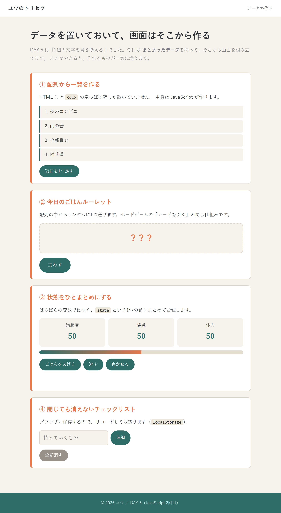

06
D A Y 6 / D A T A
データを持って、
画面を作る
前回は「1個の文字を書き換える」だった。
今日はまとまったデータから画面を組み立てる。
第6回 ／ 配列・オブジェクト・状態・保存

今日が山。
今日のゴール
4つの仕組みを作る
- 配列からリストを自動生成する
- ランダムに1つ選ぶルーレット
- 数値をまとめて管理するステータス
- 閉じても消えないチェックリスト
これは全部、最終課題の部品
マスの一覧＝配列／お題を引く＝ルーレット／好感度＝ステータス。
今日作るものを組み合わせると、あのパーティゲームになる。
今日の合言葉
「データを直す → 画面を作り直す」
画面を直接いじるのではなく、必ずデータ側を直す。
画面を直接いじるのではなく、必ずデータ側を直す。
day6/index.html

基本 ①
配列 ── 順番に並んだ箱
なぜ0から数えるのか。もともとは「先頭から何個ぶんずれた場所か」を表す数字だったから。
先頭そのものは、ずれ0。慣れると自然だが、最初はだいたい間違える。
0 から数える
C言語と同じ。3個の配列の最後は [2]。
likes[3] は undefined（存在しない）になる。
なぜ配列を使うのか
× 変数を並べると
○ 配列なら
個数が変わってもコードを書き換えなくていい。これが最大の利点。
基本 ②
配列を1つずつ取り出す
forEach（おすすめ）
item に中身、index に番号が入ってくる。 名前は自由（x でも sq でもOK）。
for（C言語と同じ書き方）
どちらを使う？
ふつうは forEach が短くて安全。
途中で止めたいときや番号を細かく操作したいときは for。
最終課題で使う場面
盤面の24マスを作るとき、for で
1マスずつ HTML を生成している。
基本 ③
JavaScript で HTML を作る
| メソッド | 意味 |
|---|---|
| createElement("li") | 新しいタグを作る |
| appendChild(li) | 子としてくっつける |
| innerHTML = "" | 中身を空にする |
| prepend(li) | 先頭にくっつける |
| remove() | その要素を消す |
innerHTML = "" を忘れると
描き直すたびに古い行が残って増え続ける。
「押すたびにリストが2倍になる」のはこれが原因。
今日いちばん大事
画面をいじらない。データをいじる
× 画面を直接いじる
動く。でも——
- 今いくつあるのか分からない
- 並べ替えができない
- 保存ができない
- 削除の処理が別に必要
○ データを直して描き直す
たった2行。しかも——
- いつでも likes を見れば現状が分かる
- 並べ替えも削除も配列の操作だけ
- そのまま保存できる
これが「状態管理」の考え方
React などの本格的な道具も、根っこはこれと同じ。
正しいデータが1か所にあり、画面はその写し。
理屈より、今日いじってるうちに手が覚える。
理屈より、今日いじってるうちに手が覚える。
基本 ④
オブジェクト ── 名前つきの箱
配列が番号で取り出すのに対して、オブジェクトは名前で取り出す。
| 書き方 | 取り出し | |
|---|---|---|
| 配列 | [ ] | likes[0] |
| オブジェクト | { } | state.mood |
配列とオブジェクトは混ぜられる
最終課題はこの形
マスの一覧も、お題カードも、オブジェクトの配列で持っている。
マスを増やしたければ、配列に1行足すだけ。
設計のかたち
state と draw() のペア
描画は1か所にまとめる
画面を書き換えるコードを drawState() に集めておくと、
表示を直したいときは1つの関数だけ見ればいい。
はみ出さないようにする
clamp() のような小さな関数を作っておくと、
0〜100 からはみ出す事故を全部の場所で防げる。
ボタンが増えても壊れない
新しいボタンを足すときも「state を変えて draw を呼ぶ」だけ。
パターンが同じなので迷わない。
基本 ⑤
時間を使う ── setTimeout / setInterval
| 関数 | 動き |
|---|---|
| setTimeout | ◯ミリ秒後に1回だけ |
| setInterval | ◯ミリ秒ごとにずっと |
| clearInterval | setInterval を止める |
1000 で1秒
単位はミリ秒。setTimeout(f, 1000) で1秒後。
ルーレットの作り方
setInterval でパラパラ切り替え → 12回目で clearInterval → 最後に本当の結果を出す。
これだけで「回っている」感じが出る。
基本 ⑥
閉じても消えないようにする
| 関数 | 意味 |
|---|---|
| setItem(名前, 値) | 保存 |
| getItem(名前) | 読み込み（無ければ null） |
| JSON.stringify( ) | データ → 文字列 |
| JSON.parse( ) | 文字列 → データ |
文字列しか保存できない
配列やオブジェクトをそのまま入れると [object Object] になる。
必ず JSON.stringify で文字列にしてから。
できないこと
保存先はそのブラウザの中だけ。
別のPCやスマホからは見えない。
みんなで共有したいなら DAY 8 の Firebase が必要になる。
確認のしかた
F12 → Application タブ → Local Storage。
保存された中身がそのまま見える。
C H A P T E R / 0 2
実習：4つの仕組み
見本は practice/day6。
1つできるたびに、必ずブラウザで確かめて。

実習
4つを順番に
- 配列 → リスト：好きなものを配列に書いて、drawLikes() で表示
- ルーレット：食べ物の配列からランダムに1つ選ぶ
- ステータス：state オブジェクトと drawState() を作る
- チェックリスト：追加・完了・保存
①ができたら半分終わり
「配列 → forEach → createElement → appendChild」の流れが手に馴染めば、
残りは同じことの応用。
詰まったときのチェック
・console.log(likes) で配列の中身を見る
・drawLikes() を最後に呼び忘れていないか
・innerHTML = "" を書いたか
・drawLikes() を最後に呼び忘れていないか
・innerHTML = "" を書いたか
チェックリストの落とし穴
クリックで完了にするとき、配列を直してから描き直すのを忘れずに。
画面のクラスだけ変えると、リロードで元に戻る。
自分の内容にする
好きなもの・食べ物・持ち物を全部じぶんの言葉に。
そのほうが動かして楽しい。
ここでつまずく
DAY 6 のつまずき
| 症状 | 原因 | 直し方 |
|---|---|---|
| 押すたびリストが増え続ける | 描き直す前に空にしていない | 先頭で innerHTML = "" |
| データは変わったのに画面が変わらない | draw を呼び忘れ | state を直した直後に drawState() |
| Cannot read properties of undefined | 配列の範囲外を見ている | likes[3] は3個の配列に無い。0から数える |
| 保存したら [object Object] | そのまま保存した | JSON.stringify() を通す |
| リロードすると全部消える | 読み込み処理が無い | 起動時に getItem → JSON.parse |
| ルーレットが止まらない | clearInterval を呼んでいない | 回数を数えて止める |
迷ったら console.log(データ)
画面ではなくデータが正しいかをまず確認する。
データが正しくて画面が違うなら、原因は描画側。データが違うなら、原因は処理側。
これで問題が半分に絞れる。
持ち帰り用
DAY 6 の構文
| 配列 | |
|---|---|
| [ ] | 配列を作る |
| 配列[番号] | 取り出す（0から） |
| .length | 個数 |
| .push(値) | 末尾に足す |
| .pop( ) | 末尾を取り出す |
| .includes(値) | 入っているか |
| .forEach(関数) | 1つずつ処理 |
| for (let i = 0; …) | 番号で繰り返す |
| オブジェクト | |
| { 名前: 値 } | オブジェクトを作る |
| obj.名前 | 取り出す・書き換える |
| 画面を作る | |
|---|---|
| createElement("li") | タグを作る |
| appendChild(要素) | 子として追加 |
| prepend(要素) | 先頭に追加 |
| innerHTML = "" | 中身を空に |
| .remove( ) | 要素を消す |
| 時間・保存 | |
| setTimeout(f, ms) | ◯ミリ秒後に1回 |
| setInterval(f, ms) | ◯ミリ秒ごと |
| clearInterval(t) | 止める |
| localStorage.setItem | 保存 |
| localStorage.getItem | 読み込み |
| JSON.stringify / parse | 文字列との変換 |
DAY 6 おわり
チェックリスト
- 配列から画面のリストを作れる
- 「データを直す → 描き直す」の意味が説明できる
- オブジェクトで状態をまとめられる
- localStorage で保存・復元できる
- 描画を1つの関数にまとめる利点が言える
次回 DAY 7 ／ 総合制作
新しい文法はもう出てこない。次回は作り方そのものを学ぶ。
アイデアをどう形にするか——ここが本当の山場。
宿題（重要・15分）
「こんなの作りたい」を3つ紙に書いてくること。
余裕があれば exercises.html の問15〜17も。
余裕があれば exercises.html の問15〜17も。